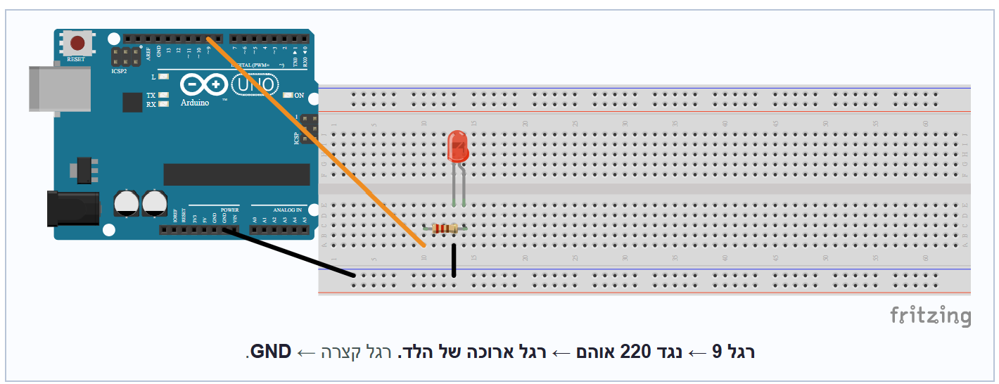

אותה תבנית כמו שלב 3 — רק טור אחד הצידה, ומספר רגל שונה (10).
עוברים על השלבים לפי הסדר. אפשר לסמן ✓ לכל שלב שמסיימים.

בתרשים מופיע לד אחד לדוגמה. הלד השני מחווט בדיוק באותה צורה — רק טור אחד הצידה, ודרך הנגד אל רגל 10 במקום רגל 9.
בוחרים לד שני — בצבע שונה מהראשון, כדי שיהיה קל להבחין ביניהם (אם הראשון אדום, בוחרים ירוק או צהוב).
בוחרים עוד נגד של 220 אוהם (פסים אדום · אדום · חום).
מכניסים את הלד השני לברדבורד, טור אחד ליד הראשון. כל רגל בטור שונה, כמו בשלב 3.
מחברים את הרגל הארוכה (+) של הלד השני לרגל דיגיטלית 10 דרך הנגד של 220 אוהם.
מחברים את הרגל הקצרה (−) של הלד השני לרגל GND בעזרת חוט ג'אמפר.
על הברדבורד יש עכשיו שני לדים זה לצד זה, לכל אחד נגד משלו. הלד הראשון עדיין מהבהב; השני עדיין לא אמור להאיר.
הקוד משלב 4 עדיין רץ ויודע רק על רגל 9. בשלב 6 מעלים קוד חדש שמשתמש בשתי הרגליים.